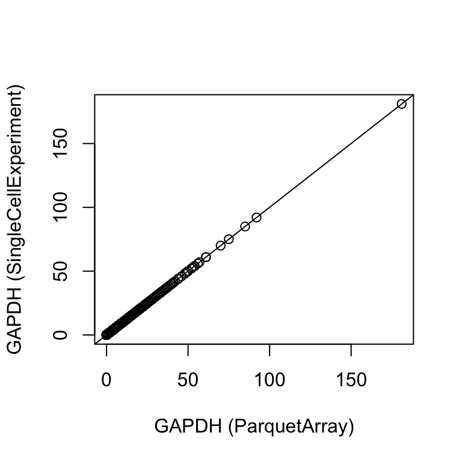

suppressPackageStartupMessages({
library("arrow")
library("dplyr")
library("fs")
library("microbenchmark")
library("rhdf5")
library("tibble")
library("tidyr")
library("DelayedArray")
library("Matrix")
library("S4Vectors")
library("SingleCellExperiment")
library("TENxPBMCData")
})tl;dr
Today, I learned how to store single-cell RNA-seq data in a parquet file, created the ParquetMatrix class to retrieve them, and I started to compare the performance of reading from parquet and HDF5 files.
Introduction
Previously, I learned how to create Bioconductor S4 objects based on parquet files. As Aaron Lun pointed out Parquet format is similar to 10X Genomics’ HDF5 format for sparse matrices. This motivated me to look into storing single-cell RNA-seq data, which is very sparse as most genes are not detected in any given cell.
Today, I am experimenting with coercing data from parquet files into sparse matrices and using them as a back-end for Hervé Pagès’s great DelayedArray S4 class. I used the awesome HDF5Array package to guide me, and learned more about arrow’s dictionary type.
In the end, I was positively surprised that my crude ParquetMatrix class was able to read either the full data matrix or a random subset of counts from a parquet file even a little faster than from HDF5-backed original dataset.
As a bonus, ParquetMatrix objects can be instantiated from local parquet files or from cloud storage (S3).
Retrieving an example Single-cell RNA-seq dataset
As an example dataset, I am using single-cell RNA-seq included as the pbmc4k dataset in the TENxPBMCData Bioconductor package, with counts from Peripheral Blood Mononuclear Cells (PBMCs) collected from a single donor.
The TENxPBMCData() function retrieves them from ExperimentHub and caches them on the local system the first time the object is loaded 1.
It downloads three files:
- An HDF5 file with counts (dense assay)
- An RDS file with row (= gene) annotations
- An RDS file with column (= cell) annotations
tenx_pbmc4k <- suppressMessages(TENxPBMCData(dataset = "pbmc4k"))
tenx_pbmc4kclass: SingleCellExperiment
dim: 33694 4340
metadata(0):
assays(1): counts
rownames(33694): ENSG00000243485 ENSG00000237613 ... ENSG00000277475
ENSG00000268674
rowData names(3): ENSEMBL_ID Symbol_TENx Symbol
colnames: NULL
colData names(11): Sample Barcode ... Individual Date_published
reducedDimNames(0):
mainExpName: NULL
altExpNames(0):The TENxPBMCData() function combines counts with annotations, and returns a SingleCellExperiment with a sparse HDF5-backed DelayedMatrix in the counts slot and gene and cell annotations as rowData and colData DataFrames, respectively. It contains counts for 33694 genes in 4340 cells.
The counts are retrieved from the HDF5 file on demand, and the full matrix only uses 2.3 Mb of memory.
counts(tenx_pbmc4k)[1:10, 1:10]<10 x 10> sparse DelayedMatrix object of type "integer":
[,1] [,2] [,3] [,4] ... [,7] [,8] [,9] [,10]
ENSG00000243485 0 0 0 0 . 0 0 0 0
ENSG00000237613 0 0 0 0 . 0 0 0 0
ENSG00000186092 0 0 0 0 . 0 0 0 0
ENSG00000238009 0 0 0 0 . 0 0 0 0
ENSG00000239945 0 0 0 0 . 0 0 0 0
ENSG00000239906 0 0 0 0 . 0 0 0 0
ENSG00000241599 0 0 0 0 . 0 0 0 0
ENSG00000279928 0 0 0 0 . 0 0 0 0
ENSG00000279457 0 0 0 0 . 0 0 0 1
ENSG00000228463 0 0 0 0 . 0 0 0 0
Note
The underlying HDF5 file only contains the gene x cell count matrix.
rhdf5::h5ls(path(counts(tenx_pbmc4k))) group name otype dclass dim
0 / counts H5I_DATASET INTEGER 33694 x 4340The
Like most single-cell RNA-seq datasets, the data is very sparse: For example, 97.5% of the genes in the first four samples have zero counts.
Handling sparse count data in memory
Let’s load all counts into memory as a sparse dgCMatrix defined in the Matrix R package.
m <- as(counts(tenx_pbmc4k), "dgCMatrix")
dim(m)[1] 33694 4340Because only non-zero counts need to be represented, the sparse dgCMatrix matrix m is still relatively small, occupying 67.9 Mb of memory.
Note
Internally, a dgCMatrix is represented in the (sorted) compressed sparse column format (CSC). Each non-zero value is stored as three numbers:
i: the row indexj: the column pointerx: the value (= count)
We can extract this internal representation into a tall, thin data.frame with the Matrix::summary() function.
df <- as.data.frame(
Matrix::summary(
as(counts(tenx_pbmc4k), "dgCMatrix")
), row.names = NULL
)
df$x <- as.integer(df$x)This data.frame only contains non-zero values, e.g. 19773 of the original 33694 genes and 4340 of the original 4340 cells. No counts were detected for the remaining (e.g. missing) genes and cells.
The data.frame requires 65.5 Mb of memory.
Note
Instead of a regular data.frame we can also work with arrow::Table objects. Here, I explicitly create a Table with three 32 bit integers. (Because single-cell RNA-seq counts are always positive and we have a good idea of their upper bound, I am using an unsigned 32 bit integer type for the x column, allowing values between 0 and 4,294,967,295.)
a_tbl <- arrow::as_arrow_table(
df,
schema = arrow::schema(
i = int32(),
j = int32(),
x = uint32()
))
a_tblTable
5727695 rows x 3 columns
$i <int32>
$j <int32>
$x <uint32>
See $metadata for additional Schema metadataCreating an arrow::Table object appears to consume little additional memory (0.5 Kb) as it is managed by arrow and not R.
Alternatively, I can also encode the row-names (= gene identifiers) and column-names (= cell barcodes) in the data.frame. Because each of the identifiers appears multiple times, they are best represented as factors.
By including all of the gene- and barcode identifiers as factor levels, including those genes / barcodes that were not detected (e.g. had a total of zero counts), I retain information about them as well.
df$i <- factor(row.names(tenx_pbmc4k)[df$i], levels = row.names(tenx_pbmc4k))
df$j = factor(tenx_pbmc4k$Barcode[df$j], levels = tenx_pbmc4k$Barcode)
Note
By the way, arrow tables (and parquet files) have an equivalent data type and R factors stored as type dictionary.
arrow::as_arrow_table(
df
)Table
5727695 rows x 3 columns
$i <dictionary<values=string, indices=int32>>
$j <dictionary<values=string, indices=int16>>
$x <int32>
See $metadata for additional Schema metadataWriting parquet files
Next, let’s store the df data.frame in a (single) parquet file on the local filesystem.
parquet_file <- tempfile(fileext = ".parquet")
arrow::write_parquet(x = df, sink = parquet_file, use_dictionary = TRUE)This yields a parquet file that’s 15.6M in size. (For comparison, the original HDF5 file was 12.8M in size, but did contained neither the gene- nor cel (=barcode) identifiers.)
head(arrow::read_parquet(parquet_file))# A tibble: 6 × 3
i j x
<fct> <fct> <int>
1 ENSG00000187608 AAACCTGAGAAGGCCT-1 1
2 ENSG00000116251 AAACCTGAGAAGGCCT-1 4
3 ENSG00000177674 AAACCTGAGAAGGCCT-1 1
4 ENSG00000117118 AAACCTGAGAAGGCCT-1 1
5 ENSG00000179051 AAACCTGAGAAGGCCT-1 1
6 ENSG00000053371 AAACCTGAGAAGGCCT-1 1A parquet-file backed DelayedArray
The original tenx_pbmc4k object represents the counts as a sparse DelayedMatrix object of type "integer", e.g. it copies the data from the HDF5 file into memory only when it is necessary.
Here, I will reproduce this behavior with my parquet file by implementing a minimal seed for the DelayedArray S4 class.
The ParquetArraySeed S4 class
Under the hood, each DelayedMatrix object contains a seed object. For example, the tenx_pbmc4k object contains a HDF5ArraySeed seed:
seed <- seed(counts(tenx_pbmc4k))
class(seed)
is_sparse(seed)Let’s create a similar ParquetArraySeed class that inherits from the Array class.
setClass("ParquetArraySeed",
contains = "Array",
slots = c(
filepath = "character",
dim = "integer",
dimnames = "list"
)
)To power a DelayedArray object, I need to define at least three different S4 methods for my new class:
dim()- returning an integer vector with the dimensionsdimnames()- returning a list of character vectors with the dimension names (if any), e.g. the row and column names of the matrix.extract_array()- returning an ordinary array for a set of indices (see below), e.g. a subset of the dataset to realize in memory.
Let’s start with the dim() and dimnames() methods. We will rely on the constructor function (see below) to retrieve the unique row and column names from the parquet files, and then populate the @dimnames and @dim slots for future reference.
setMethod("dimnames", "ParquetArraySeed", function(x) x@dimnames)
setMethod("dim", "ParquetArraySeed", function(x) x@dim)I also create a constructor function, which precalculates the dimensions of the dataset and populates the @dim and @dimnames slots.
.get_dimnames <- function(filepath) {
list(
levels(read_parquet(filepath, col_select = "i")[[1]]),
levels(read_parquet(filepath, col_select = "j")[[1]])
)
}
.get_dim <- function(filepath) {
n_i <- read_parquet(filepath, col_select = "i") %>%
collect() %>%
pull(i) %>%
nlevels()
n_j <- read_parquet(filepath, col_select = "j") %>%
collect() %>%
pull(j) %>%
nlevels()
c(n_i, n_j)
}
ParquetArraySeed <- function(filepath, dim = NULL, dimnames = NULL) {
if (is.null(dimnames)) {
dimnames <- .get_dimnames(filepath)
}
if (is.null(dim)) {
if (is.null(dimnames)) {
dim <- .get.dim(filepath)
} else {
dim <- lengths(dimnames)
}
}
x <- new("ParquetArraySeed", filepath = filepath, dim = .get_dim(filepath),
dimnames = dimnames)
return(x)
}Finally, I need a function that subsets the dataset to a user-specified set of genes and / or cells. I also need to ensure that passing an empty query returns the full dataset. (In a previous post I used duckdb to queries parquet files; here I am using arrow’s dplyr bindings instead.)
.extract_array_from_ParquetArraySeed <- function(x, index) {
if (identical(index, list(integer(0), integer(0)))) {
# zero indices => return empty matrix
return(matrix(0L, nrow = 0, ncol = 0))
}
keep_i <- seq.int(dim(x)[1])
keep_j <- seq.int(dim(x)[2])
# to simplify lookups, I convert the arrow dictionary to integer indices
arrow_tbl <- read_parquet(x@filepath, as_data_frame = FALSE)
arrow_tbl$i <- Array$create(arrow_tbl$i)$indices() + 1
arrow_tbl$j <- Array$create(arrow_tbl$j)$indices() + 1
if (is.null(index[[1]]) & is.null(index[[2]])) {
# NULL indices => return the full dataset
dataset <- arrow_tbl
} else if (!is.null(index[[1]]) && is.null(index[[2]])) {
# no column index => return all columns
keep_i <- index[[1]]
dataset <- filter(arrow_tbl, i %in% keep_i)
} else if (is.null(index[[1]]) && !is.null(index[[2]])) {
# no row index => return all rows
keep_j <- index[[2]]
dataset <- filter(arrow_tbl, j %in% keep_j)
} else {
# return requested rows and requested columns
keep_i <-index[[1]]
keep_j <- index[[2]]
dataset <- filter(arrow_tbl, i %in% keep_i, j %in% keep_j)
}
# pivot the count data into a matrix
dataset <- collect(dataset)
m <- matrix(
data = 0L,
nrow = length(keep_i),
ncol = length(keep_j),
dimnames = list(dimnames(x)[[1]][keep_i],
dimnames(x)[[2]][keep_j])
)
matrix_index <- cbind(
match(dataset[["i"]], keep_i),
match(dataset[["j"]], keep_j)
)
m[matrix_index] <- dataset$x
return(m)
}
setMethod("extract_array", "ParquetArraySeed",
.extract_array_from_ParquetArraySeed)Creating a first parquet-backed DelayedArray object
With these three methods in place, I can instantiate my first ParquetArraySeed object, which is suitable as input to the DelayedArray constructor from the eponymous R package.
seed <- ParquetArraySeed(parquet_file)
da <- DelayedArray(seed)
class(da)[1] "DelayedMatrix"
attr(,"package")
[1] "DelayedArray"Next, let’s test different ways of subsetting our DelayedArray and make sure the returned dimensions match those of the requested indices:
stopifnot(
identical(dim(da[1:10, 1:100]), c(10L, 100L)),
identical(dim(da[1:10, ]), c(10L, ncol(da))),
identical(dim(da[, 1:10]), c(nrow(da), 10L)),
identical(dim(da["ENSG00000243485", 1:10, drop = FALSE]), c(1L, 10L)),
identical(
dim(da[c(1, 1, 2, 98), c("AACTCAGTCCAACCAA-1", "AACTCCCAGAAACCTA-1")]),
c(4L, 2L))
)Finally, let’s retrieve the (raw) counts for the GAPDH gene (ENSG00000111640) and ensure that the same results are retrieved from both objects:
plot(
counts(tenx_pbmc4k[ "ENSG00000111640", ]),
da[ "ENSG00000111640", tenx_pbmc4k$Barcode],
xlab = "GAPDH (ParquetArray)", ylab = "GAPDH (SingleCellExperiment)")
abline(0, 1)
The ParquetMatrix class
Now that I have defined a seed, I can add a higher level class to facilitate working with parquet-backed matrices. The ParquetMatrix inherits from the DelayedMatrix class. It will automatically create the necessary seed, so all I have to provide is the path to the parquet file.
setClass("ParquetMatrix",
contains = "DelayedMatrix",
representation(seed = "ParquetArraySeed")
)
setMethod("DelayedArray", "ParquetArraySeed",
function(seed) new_DelayedArray(seed, Class="ParquetMatrix")
)
ParquetMatrix <- function(filepath, ...) {
seed <- ParquetArraySeed(filepath = filepath, ...)
new("ParquetMatrix", seed = seed)
}pm <- ParquetMatrix(parquet_file)
dim(pm)[1] 33694 4340As I learned in a previous post gene and cell annotations can be combined with the ParquetMatrix into a SingleCellExperiment.
sce <- SingleCellExperiment(
assays = list(counts = pm),
colData = colData(tenx_pbmc4k)[match(colnames(pm), tenx_pbmc4k$Barcode), ],
rowData = rowData(tenx_pbmc4k)[row.names(pm), ]
)
sceclass: SingleCellExperiment
dim: 33694 4340
metadata(0):
assays(1): counts
rownames(33694): ENSG00000243485 ENSG00000237613 ... ENSG00000277475
ENSG00000268674
rowData names(3): ENSEMBL_ID Symbol_TENx Symbol
colnames(4340): AAACCTGAGAAGGCCT-1 AAACCTGAGACAGACC-1 ...
TTTGTCAGTTAAGACA-1 TTTGTCATCCCAAGAT-1
colData names(11): Sample Barcode ... Individual Date_published
reducedDimNames(0):
mainExpName: NULL
altExpNames(0):Comparison to HDF5-backed DelayedArrays
Let’s finish this example of a minimal implementation of the ParquetMatrix class by comparing its performance with the original hdf5-backed object.
Reading the full dataset into memory
First, let’s read the full matrix into memory from either our parquet or the original HDF5 files. (We read each file ten times to get an idea of the average time it takes on my system.)
mb <- microbenchmark(
parquet = as.matrix(counts(sce)),
hdf5 = as.matrix(counts(tenx_pbmc4k)),
times = 10, unit = "s")
print(mb, signif = 2)Unit: seconds
expr min lq mean median uq max neval
parquet 0.54 0.57 0.59 0.58 0.61 0.65 10
hdf5 0.81 0.82 0.85 0.83 0.86 0.94 10Not too bad! Loading the count matrix into memory from the parquet file is slightly faster than from the HDF5 file on average.
Subsetting to 50 random rows and columns
Both parquet and HDF5 formats are optimized for column-oriented data. Let’s try to retrieve a random subset of counts to see how they fare:
rows <- sample(nrow(pm), 50, replace = FALSE)
cols <- sample(ncol(pm), 50, replace = FALSE)mb <- microbenchmark(
parquet = as.matrix(counts(sce)[rows, cols]),
hdf5 = as.matrix(counts(tenx_pbmc4k)[rows, cols]),
times = 10, unit = "s")
print(mb, signif = 2)Unit: seconds
expr min lq mean median uq max neval
parquet 0.093 0.095 0.11 0.11 0.12 0.14 10
hdf5 0.120 0.120 0.12 0.12 0.12 0.12 10Extracting the 50 x 50 sub-matrix takes roughly the same amount of time with both file types.
Conclusion
Today, I learned a lot about working with arrow objects in R, and got the chance to explore the DelayedArray infrastructure further. I am certain that the methods I wrote can be improved - but even my crude implementation of the ParquetMatrix class seems to be about as performant as the HDF5-backed version when reading from a local file.
The arrow project supports reading parquet files from cloud storage (S3), something I found challenging (e.g. slow) with HDF5 files. All I need to do is pass an S3 URL as the filepath argument to the ParquetMatrix() function, and (assuming I have set up the right access credentials) I can work with remote files in the same way.2
Reproducibility
Session Information
sessioninfo::session_info("attached")─ Session info ───────────────────────────────────────────────────────────────
setting value
version R version 4.3.1 (2023-06-16)
os macOS Ventura 13.5.2
system aarch64, darwin20
ui X11
language (EN)
collate en_US.UTF-8
ctype en_US.UTF-8
tz America/Los_Angeles
date 2023-09-13
pandoc 3.1.1 @ /Applications/RStudio.app/Contents/Resources/app/quarto/bin/tools/ (via rmarkdown)
─ Packages ───────────────────────────────────────────────────────────────────
! package * version date (UTC) lib source
P abind * 1.4-5 2016-07-21 [?] CRAN (R 4.3.0)
P arrow * 13.0.0 2023-08-30 [?] CRAN (R 4.3.0)
P Biobase * 2.60.0 2023-05-08 [?] Bioconductor
P BiocGenerics * 0.46.0 2023-06-04 [?] Bioconductor
P DelayedArray * 0.26.7 2023-07-30 [?] Bioconductor
P dplyr * 1.1.2 2023-04-20 [?] CRAN (R 4.3.0)
P fs * 1.6.3 2023-07-20 [?] CRAN (R 4.3.0)
P GenomeInfoDb * 1.36.1 2023-07-02 [?] Bioconductor
P GenomicRanges * 1.52.0 2023-05-08 [?] Bioconductor
P HDF5Array * 1.28.1 2023-05-08 [?] Bioconductor
P IRanges * 2.34.1 2023-07-02 [?] Bioconductor
P Matrix * 1.5-4.1 2023-05-18 [?] CRAN (R 4.3.1)
P MatrixGenerics * 1.12.3 2023-07-30 [?] Bioconductor
P matrixStats * 1.0.0 2023-06-02 [?] CRAN (R 4.3.0)
P microbenchmark * 1.4.10 2023-04-28 [?] CRAN (R 4.3.0)
P rhdf5 * 2.44.0 2023-05-08 [?] Bioconductor
P S4Arrays * 1.0.6 2023-08-30 [?] Bioconductor
P S4Vectors * 0.38.1 2023-05-08 [?] Bioconductor
P SingleCellExperiment * 1.22.0 2023-05-08 [?] Bioconductor
P SummarizedExperiment * 1.30.2 2023-06-11 [?] Bioconductor
P TENxPBMCData * 1.18.0 2023-04-27 [?] Bioconductor
P tibble * 3.2.1 2023-03-20 [?] CRAN (R 4.3.0)
P tidyr * 1.3.0 2023-01-24 [?] CRAN (R 4.3.0)
[1] /Users/sandmann/repositories/blog/renv/library/R-4.3/aarch64-apple-darwin20
[2] /Users/sandmann/Library/Caches/org.R-project.R/R/renv/sandbox/R-4.3/aarch64-apple-darwin20/ac5c2659
P ── Loaded and on-disk path mismatch.
──────────────────────────────────────────────────────────────────────────────
This work is licensed under a Creative Commons Attribution 4.0 International License.
Footnotes
By default, the location of the cache is set via
ExperimentHub::getExperimentHubOption("CACHE"). For example, on my system the data is located at /Users/sandmann/Library/Caches/org.R-project.R/R/ExperimentHub.↩︎The performance will depend on the network connection. With my home internet connection, I was able to read the full dataset from the parquet file into memory or extract counts for 50 random genes x cells in 1.8 seconds on average.↩︎